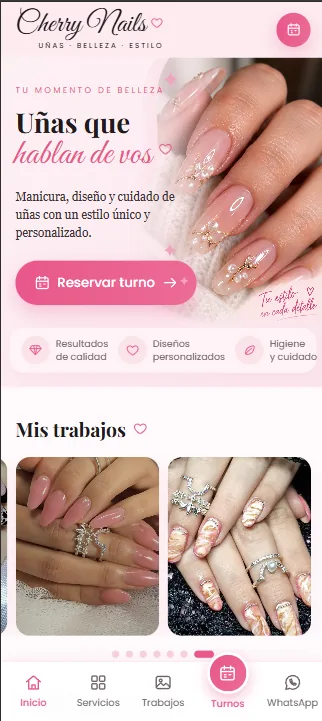
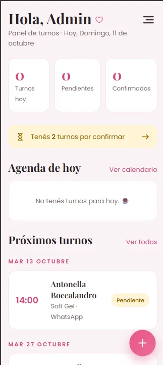

Un gestor de turnos para un estudio de uñas: la web pública, la reserva online y el panel de la dueña. Las tres partes comparten un servidor y una base de datos.


WhatsApp es solo el aviso, no el registro. Si la clienta no llega a mandar el mensaje, el turno igual queda guardado y el horario ocupado.
La lógica está en src/slots.js. No hay franjas continuas. Hay horarios fijos de inicio por día de la semana. Los de ejemplo son:
Para entrar hay que iniciar sesión. Cada turno guarda una copia del nombre, precio y duración del servicio en el momento de la reserva. Así, si después cambiás un precio, los turnos viejos no se modifican.